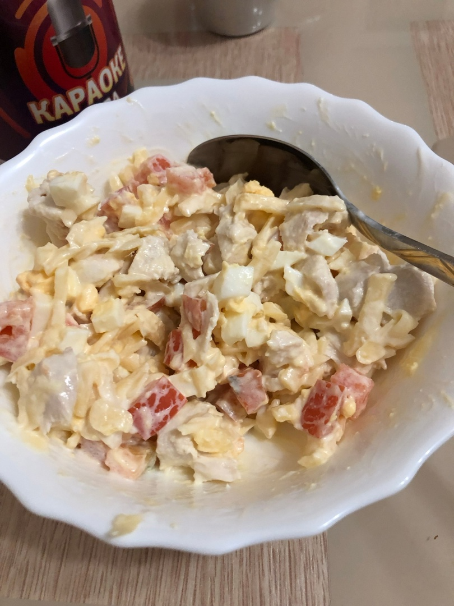

ВЕЧЕРНИЙ САЛАТ С КУРИЦЕЙ
КБЖУ на 1 порцию - 370/40/8/39
Время приготовления - 30 минут
Сложность - легко
ИНГРИДИЕНТЫ НА 1 ПОРЦИЮ:
- Филе курицы - 100гр
- Сметана - 30гр
- Сыр лёгкий - 40гр
- Кукуруза консервированная - 50гр
- Половинка помидора
- Яйцо - 1шт
СПОСОБ ПРИГОТОВЛЕНИЯ:
Шаг 1:
Отварить яйцо и филе.
Шаг 2:
Курицу и помидор нарезать небольшими кубиками, яйцо и сыр на тереть, выложить в тарелку .
Шаг 3:
Добавить сметану, посолить и перемешать.
Этот салат подходить как в качестве ужина, так и на обед. ПРИЯТНОГО АППЕТИТА!